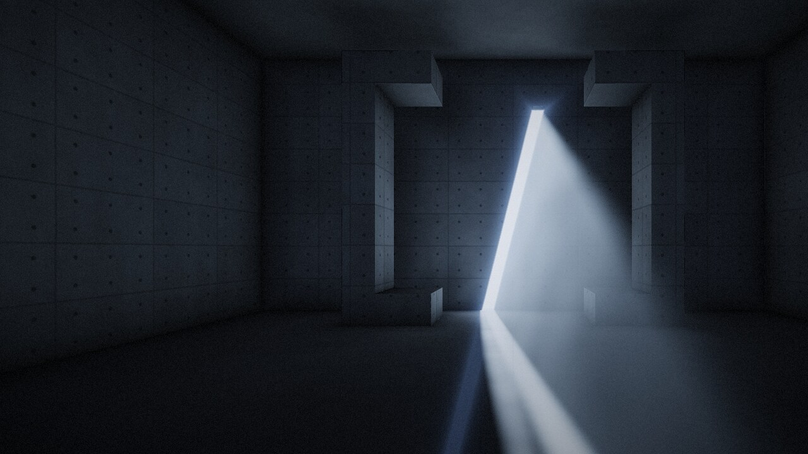
/ 01 Watch loopHall
Architecture · One full day
Live wallpapers for Plasma, Android + macOS
Fourteen little worlds, looping quietly behind everything you do. Seamless, hardware-decoded, and asleep the moment they’re hidden.
01 / THE COLLECTION
Slow water, restless ink, city lights, a cat in the rain. Every look is a complete loop, not an effect running on your desktop.

/ 01 Watch loopArchitecture · One full day
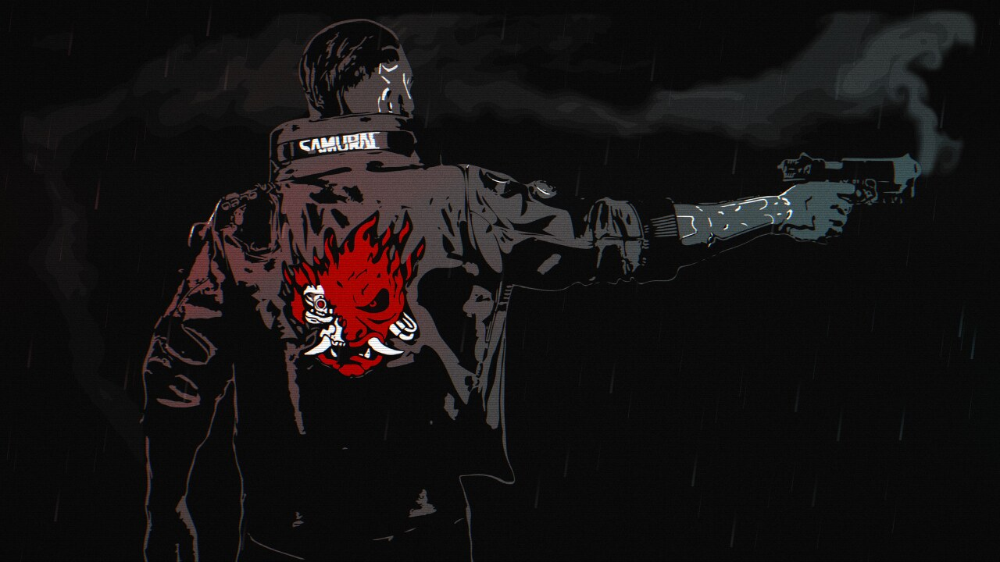
/ 02 Watch loopGlitch · Smoke · Rain
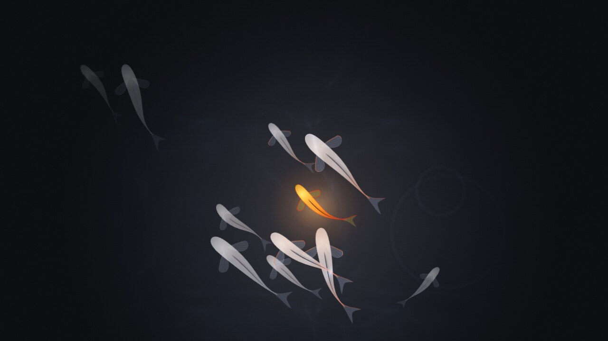
/ 03 Watch loopKoi · Caustics · Ripples
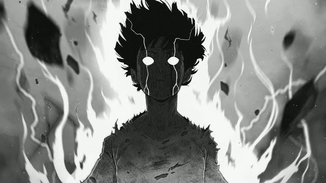
/ 04 Watch loopInk · White fire · Ash
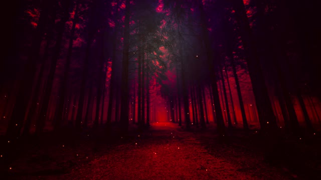
/ 05 Watch loopForest · Sparks · Warmth
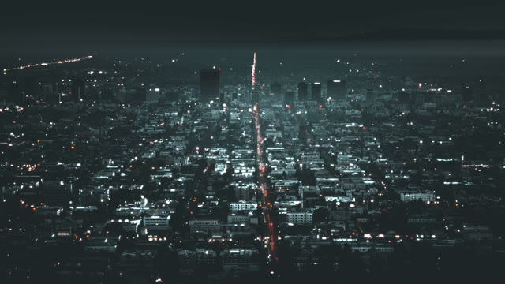
/ 06 Watch loopCity · Traffic · Three twinkle levels
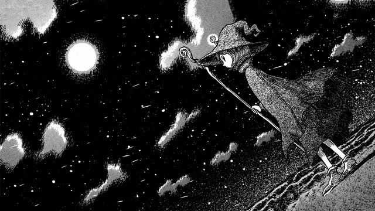
/ 07 Watch loopInk · Moonlight · A wandering witch
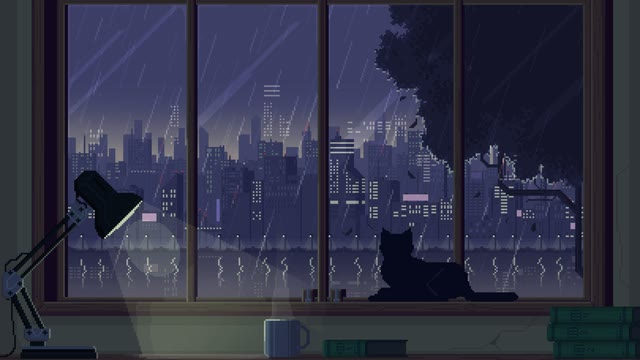
/ 08 Watch loopPixel art · Rain · One black cat
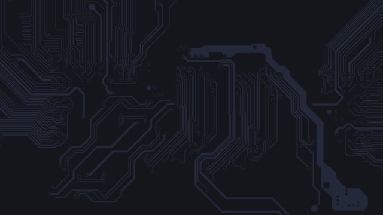
/ 09 Watch loopTraces · Blue light · Drawn and erased
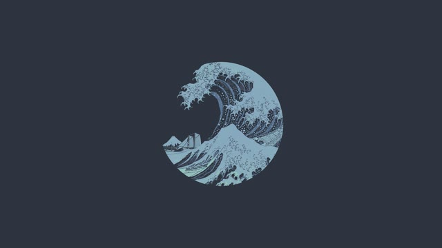
/ 10 Watch loopWoodblock · A schooner · Two frames
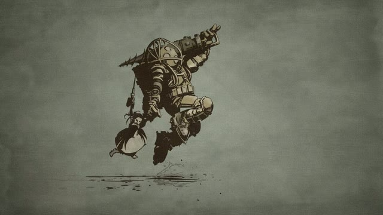
/ 11 Watch loopPaper · Ink · An unlikely pair
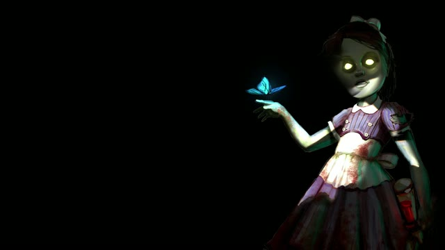
/ 12 Watch loopA butterfly · A glance · A little mystery
A halo · Tricolour smoke · A vest in the wind
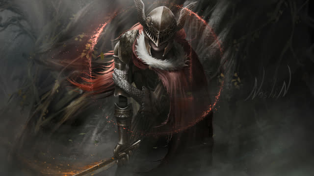
/ 14 Watch loopStreaming hair · A ring of sparks · Embers on the wind
02 / THE FEELING, WITHOUT THE OVERHEAD
The atmosphere of a live wallpaper, without keeping a tiny world simulation running behind your work.
Each scene is rendered once into a seamless HEVC video. No web view, no live renderer, no visible seam.
Your device’s hardware decoder does the work. Playback pauses when the wallpaper is covered, hidden or asleep.
Preview before saving, keep multiple profiles, choose your speed, and tune the looks that offer options.
SMALL DETAILS, STRONG FEELINGS
Living Water arrives built in, so there is something beautiful from the first launch. Android can even match the phone’s theme to the look you choose.
How playback works03 / MAKE YOURSELF AT HOME
Start with the built-in look, then browse the release catalog and save only the worlds you want to keep.
One installer for the wallpaper plugin, catalog, previews and profiles.
git clone https://github.com/jedbjorn/plasma-live-wallpapers.git
cd plasma-live-wallpapers
./install.shLive wallpaper, matching Material You themes, profiles and battery-aware stills.
Download the APKChoose the APK from the latest release, then set Live Scenes as your wallpaper.
Android setup guideA small menu-bar app with per-look options, previews and multi-screen playback.
git clone https://github.com/jedbjorn/plasma-live-wallpapers.git
cd plasma-live-wallpapers
./macos/build.sh --run04 / YOUR WORLD, NEXT
A render, phone footage, an animation, something wonderfully strange. The SDK turns almost any video into a seamless Live Scenes pack.
Make your own look